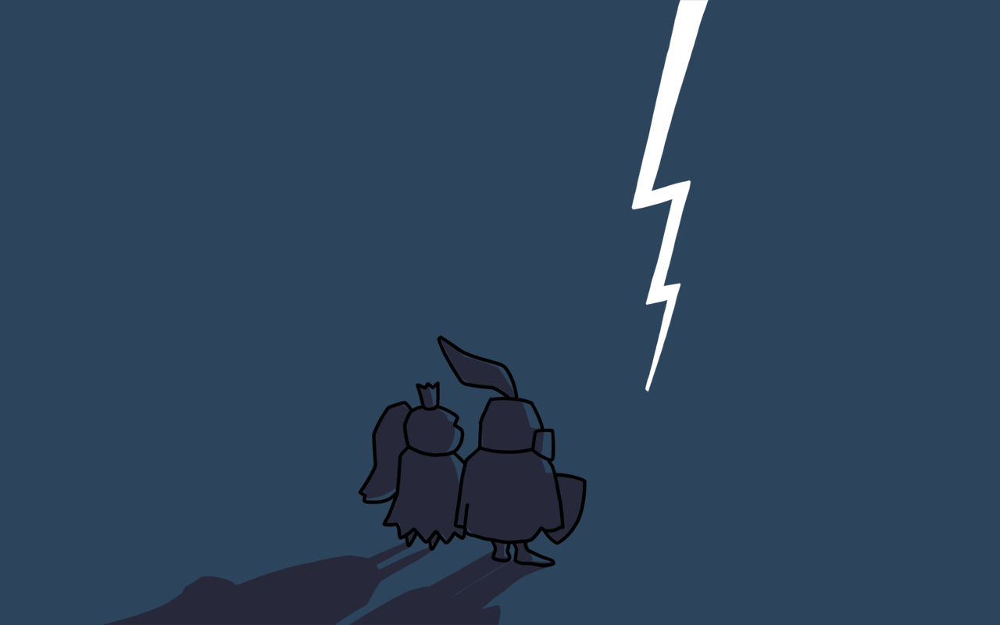
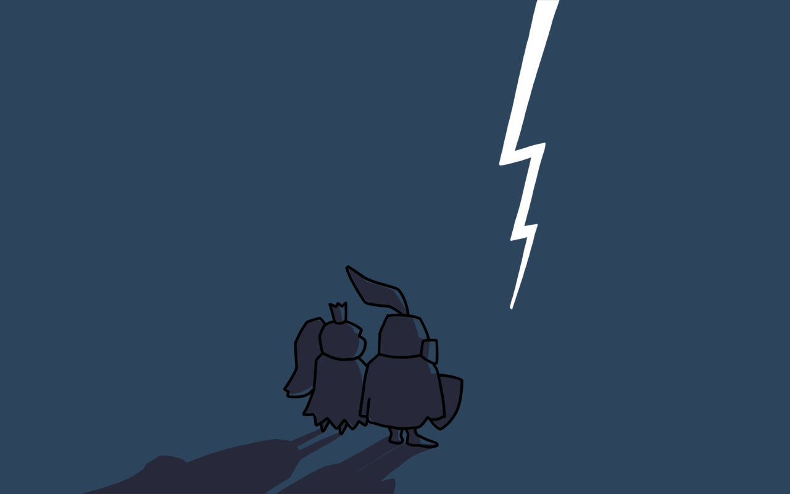
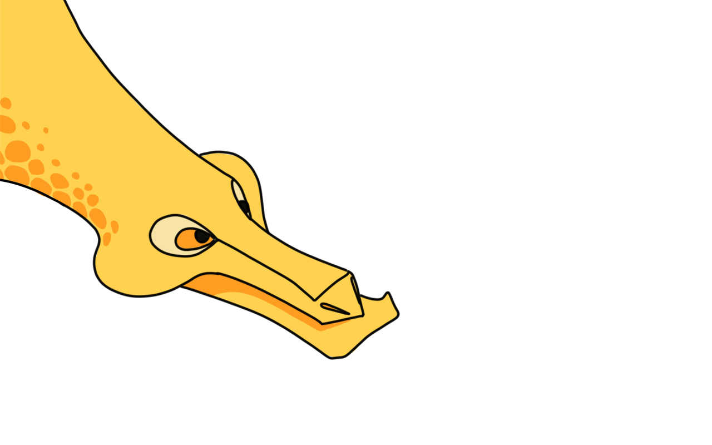
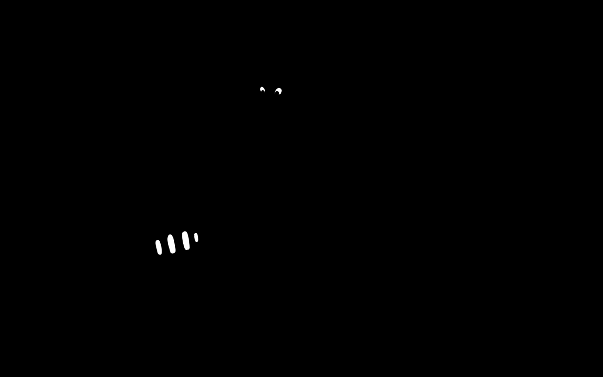
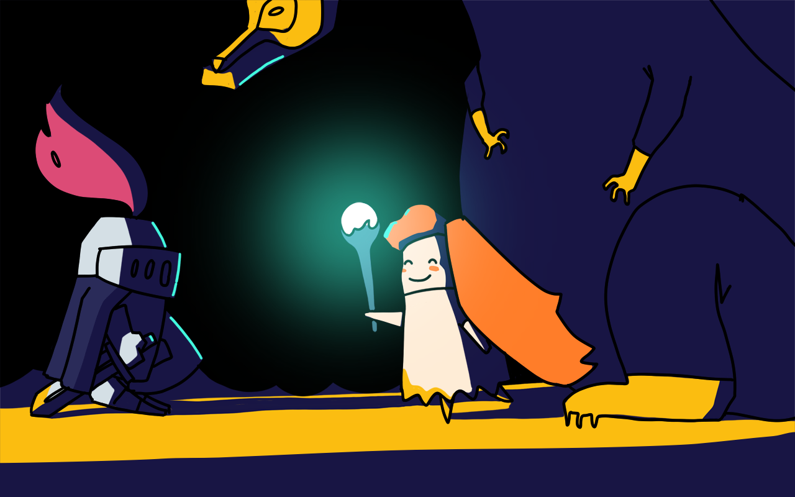

Привет, дорогой друг!
Так уж получилось, что произошло отключение электричества и многие данные были потеряны. Тебе придется восстановить этот мир и найти принцессу. А у меня еще много дел в других мирах, подобных твоему.

Держи еще одну команду, она позволит тебе шагать в другую сторону.
Кажется, эти команды могут наполнить природой это скучное, белое пространство!

Ты хорошо справился! Теперь это место стало намного привычнее.
Ура!
Но путь только начинается. Мне кажется, нам теперь к воооон тем горам.
Какая-то пещера. Надеюсь, без приключений обойдется...
Эй, там! Опять свет потух?

Ну вот, теперь у тебя есть факел!

Будешь отгонять им всякую нечить на своем пути.
Ну спасибо, дружище :-(
Змей-горыныч, ты где?

Ты где пропадал? Я с трудом выбрался из этого леса!
Некогда объяснять! Садись на меня, нужно перебраться на другой берег! Летать я тебе все равно не разрешу.

То есть как это, не разрешишь?
Я же операционная система и могу раздавать возможности различным программам.
МНОГОЗАДАЧНАЯ операционная система!
Так-так, черепки какие-то. Змей, а куда мы прилетели?

Матерь божья, это что такое!?
Извини, мне пора! Вот тебе меч, вдруг пригодится.

Наконец я тебя нашел! Теперь все будет хорошо.

Нам нужно пробраться в замок и освободить жителей нашего царства.
Встретимся на склоне
Смотри, собачка проходит одно и тоже расстояние.
Но количество кода разное! (я добавлю команды к картинке. Олег)
Все, я полетела. Нужно еще достать волшебное зелье для финальной битвы.
Что?
Ну вот и вход в замок!

Финальная битва!
Финальная битва!

Постой, рыцарь!
Держи! Это волшебный посох. С его помощью ты будешь сражаться с драконом.
Целься в его уязвимые места!

...

Бобик! Какая встреча!